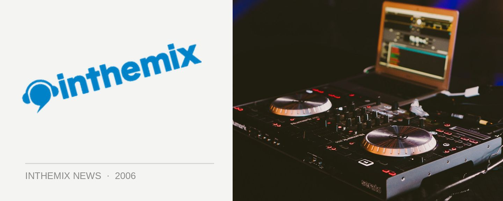

Funktrust presents the second annual MDMA Awards
The second annual Metropolitan Dance Music Awards are set to take place at Funktrust on Thursday 21 December.
The MDMA Awards are a cheeky alternative to the other music awards nights and seeks to celebrate the hard-working nightclub industry types, DJs and punters through what is described as a “ridiculous, ambiguous and hardly credible” awards ceremony. Last year the MDMA trophies were presented to winners in suspicious-looking oversized plastic zip-lock bags and the frivolities looks set to continue next Thursday night.
DJ line up on the night is The Potbelleez feat. MC Blu, Jon Wall, Trix & Goodfella, Will Styles and Learned Hand, The Hustlers, Adam Bozetto and Justin Mile.
Voting is completed online by punters at www.funktrust.net/mdma.
This year, the categories are as follows:
1.The Ron Burgundy award for Promoter of the Year: “I’m kind of a big deal, how can I say this…um….people know me.”
2.The Lube Mobile Award for Tune of the Year: Tune!
3.The Hippy Streak Award for outstanding Festival Event: Teaching us love is worth paying for.
4.The L. Ron. Hubbard Award for Outstanding Club Night: Ron founded the Cult of Scientology.
5.The fucking everywhere fucking shut-up award for Electro: More farting bass than should be legal
6.The Funktrust/Richard Simmons Award for Dancefloor Icon (Super ill dancer)
7.The Electro is Evil and Must Be Stopped Award for actions in defence of House Music: Because not everyone can be emo.
8.The Dental Surgeons’ Accredited Grills Manufacturer Committee Award for Hip Hop: Nomin8…maing.
9.The Lazarus Award for assistance in the Resuscitation of Breaks: For fidelity in the face of adversity.
10.The Marcel Marceau/Coroner’s Award for Services to Deep Minimal Dance Music: For steadfastly refusing to go toward the light.
11.The Harder Rock’n through Technology Award for Vinyl-less DJ:
12.The old growth forest award for reasonably adequate street press:
13.The myspace award for outstanding online dance portal